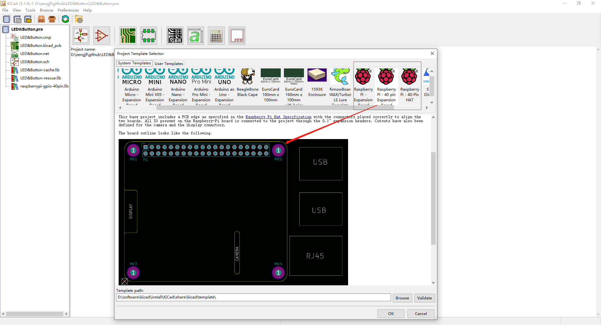
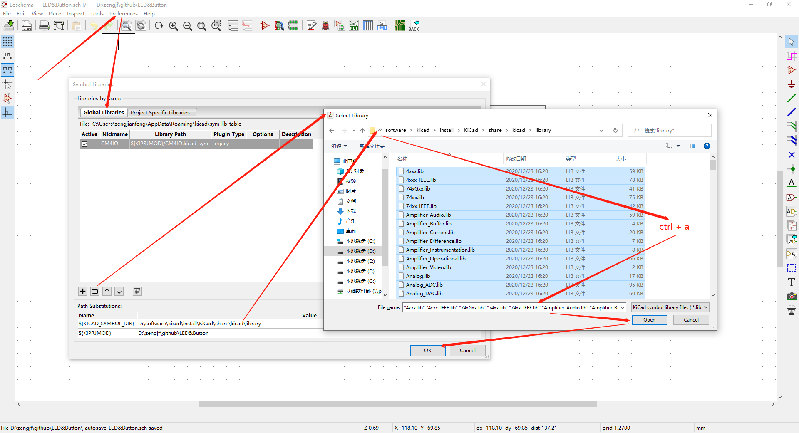
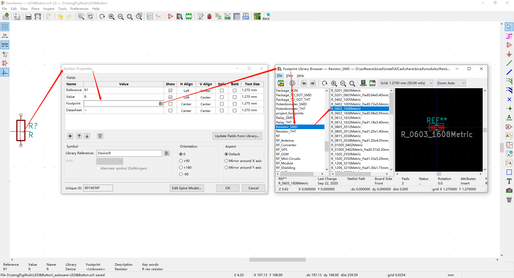

KiCad Template RPI
使用模板可以避免一些基本结构位置错误，只需要关注原理图、PCB
参考文档
Templates
<install patch>\KiCad\share\kicad\template
[File] -> [New] -> [Project from Template…]
KiCad默认模板目前最高是给版本5用的，用nightly版本的KiCad根据模板创建的工程没有原理图，主要原因是：
nightly版本原理图后缀：*.kicad_sch
version 5原理图后缀：*.sch
元器件库未配置
[preferences] -> [Manage Symbol Libraries…]

封装尺寸
0603(1608 metric(公制))是尺寸标准。一个表示英制，一个是表示公制：
0402(1005 metric)
0603(1608 metric)
0805(2012 metric)
1206(3216 metric)

检索封装库
一些常用的封装库可以在下面找到
https://componentsearchengine.com/
譬如：PL2303SA